In general, we may speak of three approaches to solving problems in dynamics
Mass represents the inertia, also known as bodies resistance to a change in its’ rate of change of velocity \[ \boldsymbol{F} = m \boldsymbol{a} \]
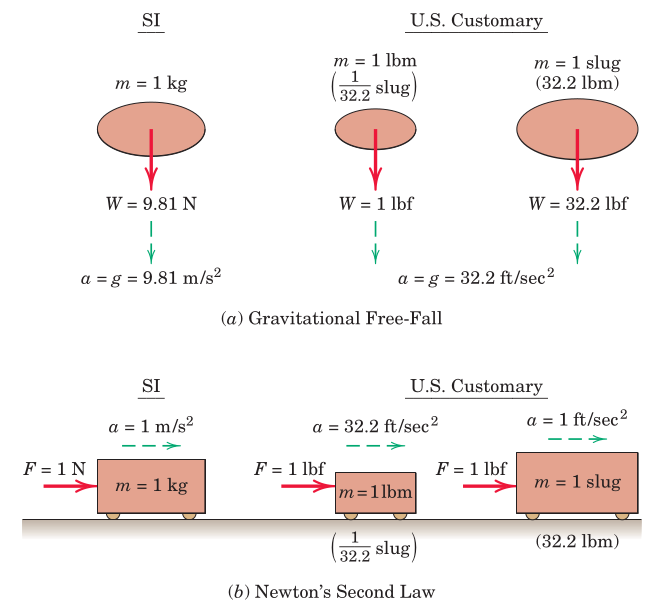
We talk about two types of motion, in general
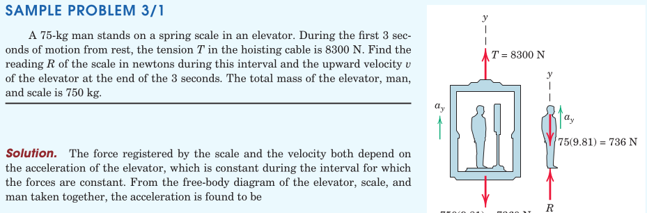
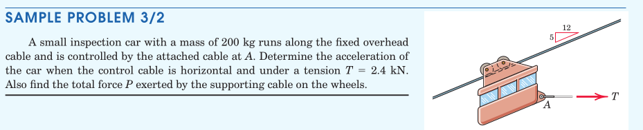
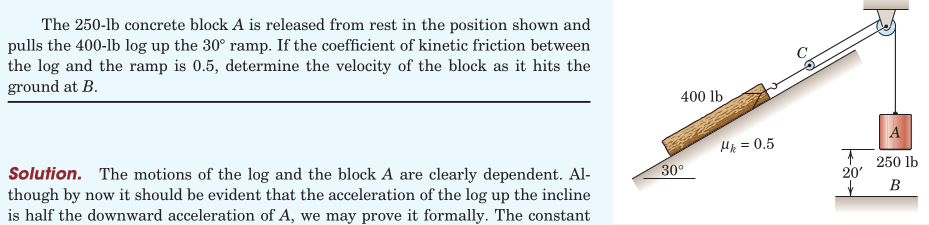
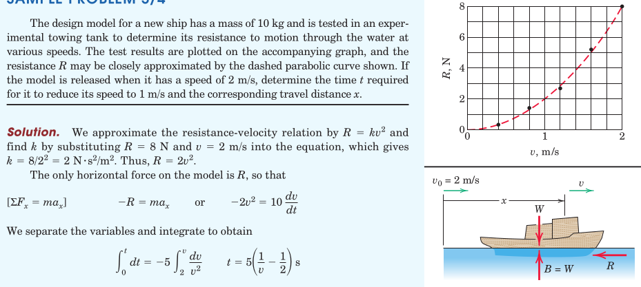
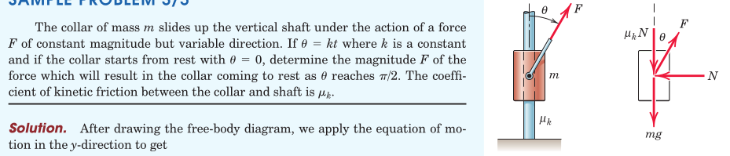
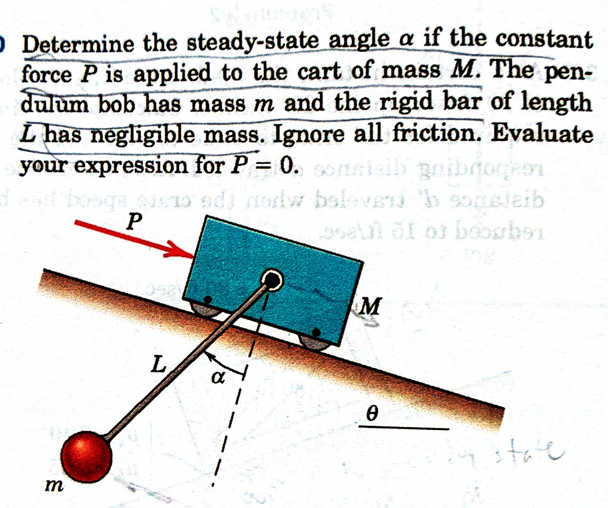
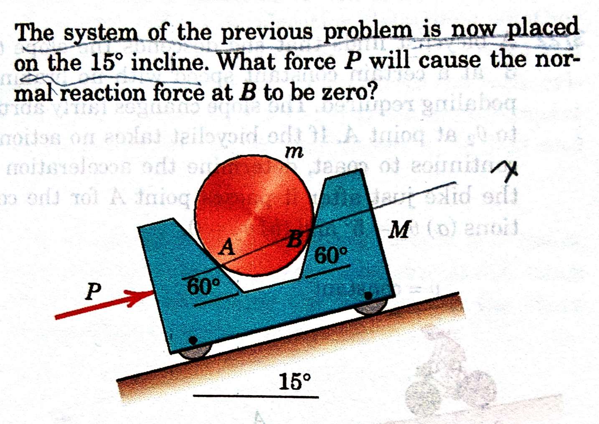
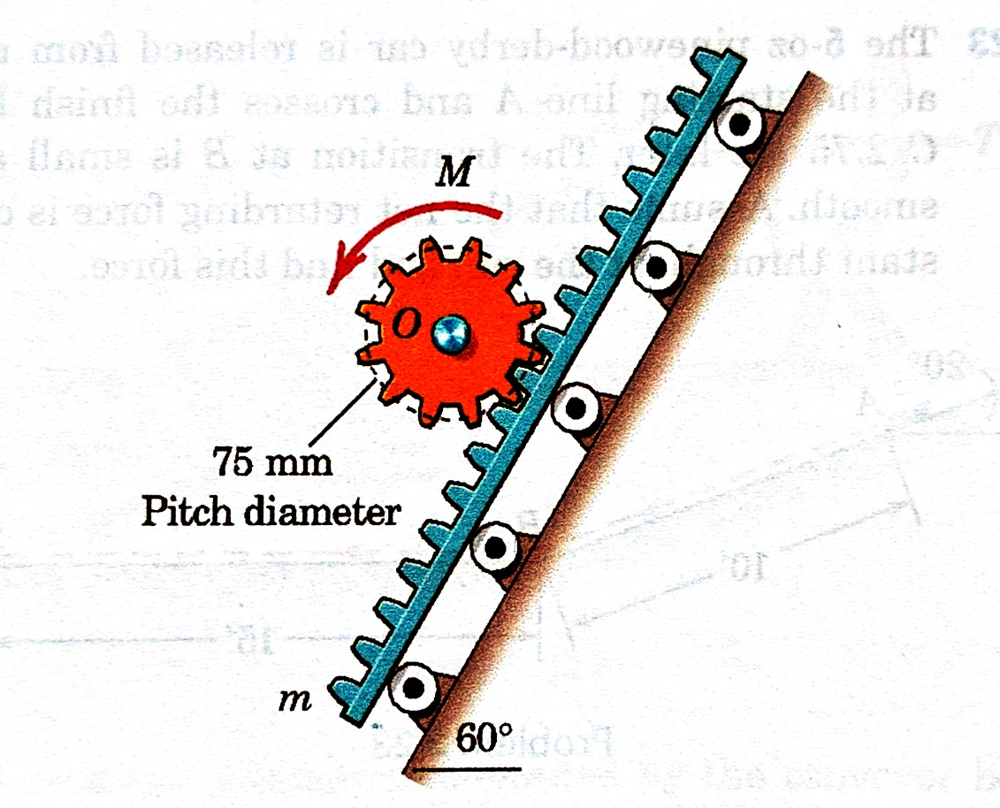
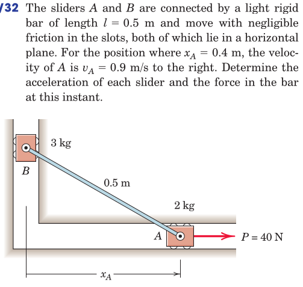
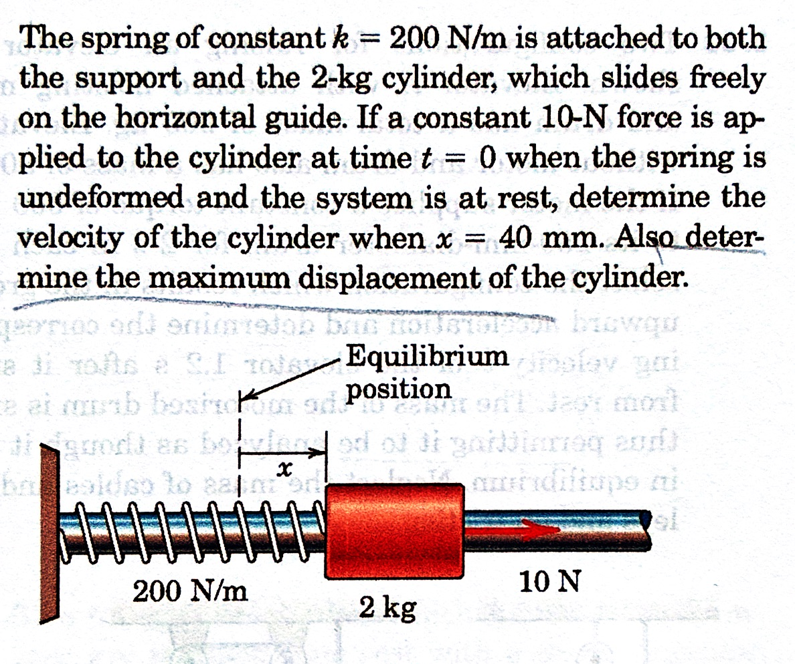
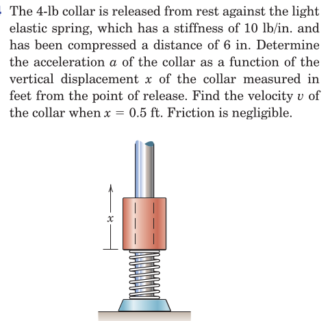
From the book: Section 2.9, Problems
From Hibbeler, Engineering Mechanics: Dynamics: Chapter 12, 147, 153, 169, 175, 177, 179